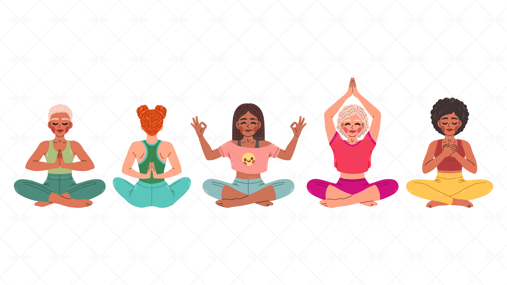

Cultivate Inner Peace The Art of Meditation
What is Meditation?
Meditation is a practice where an individual uses a technique – such as mindfulness, or focusing the mind on a particular object, thought, or activity – to train attention and awareness, and achieve a mentally clear and emotionally calm and stable state.
It's not about stopping your thoughts, but rather observing them without judgment. Regular meditation can lead to profound changes in your brain and overall well-being.
Benefits of Meditation
Reduces Stress & Anxiety
Lowers cortisol levels and promotes relaxation responses.
Improves Sleep
Calms the mind, making it easier to fall and stay asleep.
Enhances Focus & Attention
Trains the brain to sustain attention and reduce distractions.
Fosters Emotional Health
Increases self-awareness and capacity for compassion.
Boosts Happiness
Cultivates positive emotions and life satisfaction.
Supports Physical Health
May lower blood pressure and improve immune function.
Different Types of Meditation

Guided Meditation

Transcendental Meditation (TM)

Mindfulness Meditation
When and How to Meditate
When to Meditate
- Morning: Set a positive tone for the day.
- Midday: Re-center and reduce stress.
- Evening: Wind down before sleep.
- Anytime: Whenever you feel stressed or need a break.
How to Meditate (Basic Steps)
- Find a quiet, comfortable space.
- Sit in a comfortable position (chair or floor).
- Close your eyes gently or soften your gaze.
- Focus on your breath: Notice the sensation of inhales and exhales.
- When your mind wanders (it will!), gently bring your attention back to your breath.
- Start with 5-10 minutes and gradually increase.